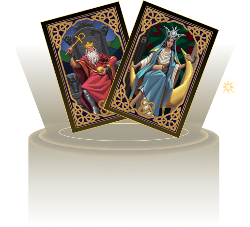

{{define "section-7"}}

<div id="token" class="container space-top-3">
  <div class="container-xl container-fluid space-md-2 px-0 px-md-12 px-lg-12">

 <div class="row justify-content-lg-between align-items-md-center"> 
    <div class="col-lg-6 mb-3 mb-lg-0 order-md-0 order-2">
      <div class="mb-3">
        <div class="content-6tN">
          <p class="karma-protocol">In today's digital era, as the boundary between physical and virtual increasingly fades, KarmaPi combines old wisdom with new technology, turning cultural heritage into digital assets. Using Karma NFTs and the prediction tools & market built by Karma Protocol, along with KART tokens, we launch an ecosystem that extend and preserve divination cultures in the digital world.</p>
 
        </div>
      </div>
     
    </div>

    <div class="col-lg-6 mb-3 mb-lg-0 order-md-0 order-1">
      <div class="position-relative section-about">
        <br>
        
        <!-- End SVG Elements -->
      </div>
    </div>
  </div>
</div> 
    </div>


      
{{end}}